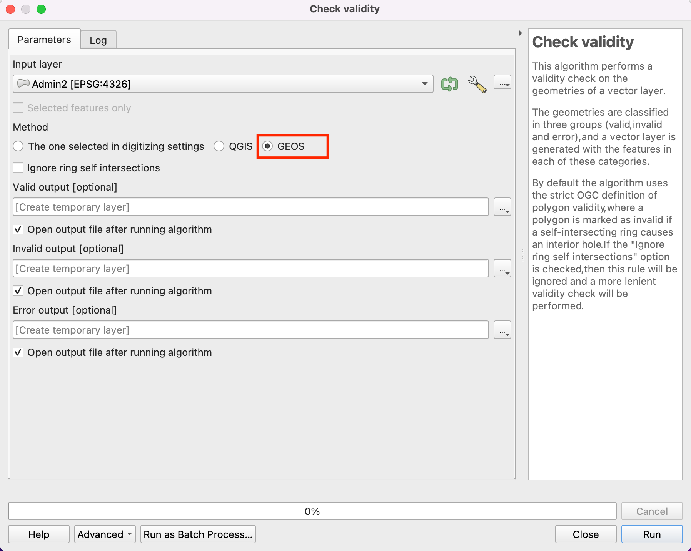
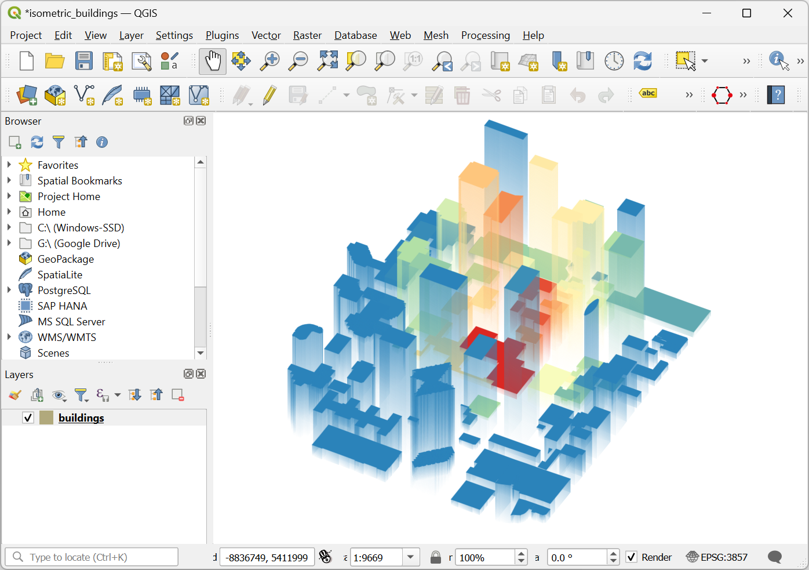
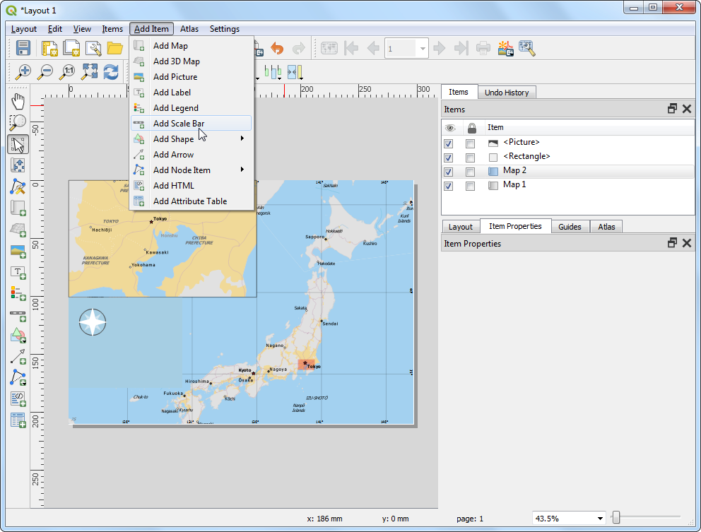
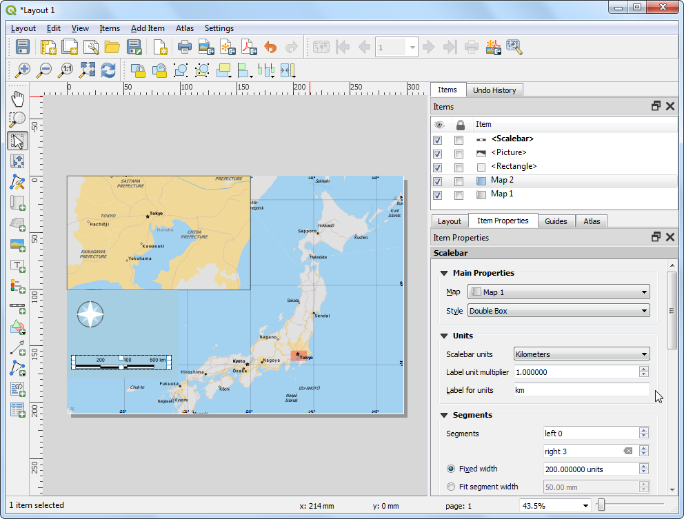

Multi Criteria Overlay Analyse (QGIS3)¶
Multi-criteria gewogen overlay-analyse is het proces van het toewijzen van gebieden op basis van een variëteit aan eigenschappen die de geselecteerde gebieden zouden moeten hebben. Hoewel dit een veel voorkomende bewerking in GIS is, wordt die het beste uitgevoerd in de rasterruimte met een op een raster gebaseerde benadering.
Notitie
Vector- vs Raster-overlays
U kunt de overlay-analyse uitvoeren op vectorlagen met gereedschappen voor geoverwerking, zoals buffer, dissolve, difference en intersection. Deze methode is ideaal als u een binair antwoord geschikt/niet-geschikt zoekt en u werkt met een handjevol lagen.
Werken in de rasterruimte geeft u een rangschikking van de geschiktheid - niet alleen de meest geschikte plek. Het stelt u ook in staat elke aantal invoerlagen gemakkelijk te combineren en verschillende wegingen toe te wijzen aan elk criterium. Over het algemeen is dit de voorkeursbenadering voor geschiktheid.
Deze handleiding gaat door de typische werkstroom voor het uitvoeren van een geschikte plaats-analyse - converteren van bron vectorgegevens naar toepasselijke rasters, ze opnieuw te classificeren en rekenkundige bewerkingen uitvoeren.
Overzicht van de taak¶
In deze handleiding zullen we de geschikte gebieden voor ontwikkeling identificeren, dat zijn
Dichtbij wegen en
Niet in de buurt van watergebieden en
Niet in een beschermde regio.
De gegevens ophalen¶
We zullen vector gegevenslagen gebruiken van OpenStreetMap (OSM). OSM is een globale database van vrij beschikbare basis kaartgegevens. Geofabrik verschaft dagelijks bijgewerkte Shapefiles voor gegevenssets van OpenStreetMap.
We zullen de gegevenslagen van OSM gebruiken voor de staat Assam in India. Geofabrik India shapefiles werden gedownload, geclipt tot de staatsgrenzen en verpakt in één enkel bestand voor GeoPackage. U kunt een kopie van het Geopackage downloaden vanaf de link hieronder:
Gegevensbron: [GEOFABRIK]
Procedure¶
Blader naar het gedownloade bestand
assam.gpkgin QGIS Browser. Vergroot het en sleep elk van de 5 individuele gegevenslagen naar het kaartvenster. U zult de lagenboundary,roads,protected_regions,water_polygonsenwater_polylineszien geladen in het paneel Lagen.

De eerste stap in de overlay-analyse, is om elke gegevenslaag te converteren naar een raster. Een belangrijke overweging is dat alle rasters hetzelfde bereik moeten hebben. We zullen de laag
boundarygebruiken als het bereik voor alle rasters. Ga naar . Zoek naar en lokaliseer het algoritme . Dubbelklik er op om het te starten.

In het dialoogvenbster Rasteriseren (vector naar raster), selecteer
roadsals de Invoerlaag. We willen een uitvoerraster maken met een pixelwaarde van 1 waar een weg is en 0 waar geen wegen zijn. Voer1in als de Een vaste waarde om te branden. De invoerlagen zijn in een geprojecteerd CRS met meters als de eenheid. SelecteerEenheden voor geoverwijzingenals de Eenheden grootte uitvoerraster. We zullen de resolutie van het uitvoerraster instellen op 15 meters. Selecteer15voor zowel Breedte/Horizontale resolutie als Hoogte/Verticale resolutie. Klik vervolgens op de knop … naast Bereik uitvoer en selecteerboundaryvoor Bereik gebruiken van.

Scroll verder naar beneden en klik op de pijlknop in Wijs een specifieke waarde Geen data toe aan de uitvoerbanden.

Dat veld zou nu moeten zijn ingesteld op
Niet bepaald. Dit is belangrijk omdat wanneer rasterberekeningen (die we later zullen gebruiken) een pixel met de waarde Geen data tegenkomt, het de uitvoer ook op Geen data instelt, wat resulteert in verkeerde uitvoer.

Scroll naar beneden naar de Geavanceerde parameters en selecteer het profiel
Hoge compressieom de compressie toe te passen. Dit zal het gecomprimeerde rasterbestand kleiner maken na het uitvoeren van het gereedschap. Toepassen van compressie zonder verlies wordt enorm aanbevolen bij het werken met rastergegevens.

Stel het uitvoerraster Gerasteriseerd in als
raster_roads.tifen klik op Uitvoeren.

Als Processing eenmaal is voltooid zult u een nieuwe laag raster_roads zien geladen in het paneel Lagen. De standaard opmaak zal pixels met wegen weergeven als wit en andere als zwart. We willen ook nog 4 andere vectorlagen converteren naar rasters. In plaats van het algoritme Rasteriseren keer voor keer uit te voeren, kunnen we de ingebouwde functionaliteit Batch verwerken gebruiken om ze allemaal in één keer te converteren. Bekijk de handleiding Massa verwerken met behulp van Framework Processing (QGIS 3) om meer te leren over Batch verwerken. Klik met rechts op het algoritme
Rasteriseren (vector naar raster)en selecteer Uitvoeren als een Batch-proces.

Klik, in het dialoogvenster Batch-processing, op de knop … op de eerste regel van de kolom Invoerlaag. Selecteer de lagen
boundary,protected_regions,water_polygonsenwater_polylinesen klik op OK.

Notitie
Deze optie van Geavanceerde parameters is niet beschikbaar als het algoritme wordt uitgevoerd in modus Batch. U zult de stappen hierboven moeten herhalen voor alle lagen en de stappen 8 tot en met 12 overslaan voordat u compressie toepast op alle uitvoer Gerasteriseerd.
Vul de parameters in met dezelfde waarden als die we gebruikten voor de laag roads. Gebruik, na het vullen van de eerste regel van de parameter, de knop om dezelfde waarde voor alle lagen toe te voegen.

In de laatste kolom Gerasteriseerd, klik op de knop … op de eerste regel. Selecteer
Vullen met parameterwaardenals de Modus Automatisch vullen enInvoerlaagals de Parameter om te gebruiken. Klik op OK.

Blader naar een map op uw computer en noem de laag
raster_. De interface voor Batch verwerken zal de naam automatisch compleet maken met de naam van de laag en alle regels vullen. Zorg er voor dat het vak Lagen laden bij voltooien is geselecteerd en klik op OK.

Als de verwerking eenmaal is voltooid zult u 4 nieuwe rasterlagen hebben geladen in het paneel Lagen. U zult hebben opgemerkt dat we nu 2 watergerelateerde lagen hebben - die beide water weergeven. We kunnen ze samenvoegen oméén enkele laag te hebben die watergebieden in de regio weergeeft. Zoek naar en lokaliseer het algoritme in de Toolbox van Processing. Dubbelklik er op om het te starten.

Voer de volgende expressie in het vak Expressie in. U kunt klikken op de toepasselijke laag in het vak Lagen om de laagnamen automatisch in te voegen. Deze expressie betekent dat we de pixelwaarden in de eerste band van de beide waterrasters bij elkaar willen optellen. Klik op de knop … naast Reference layer(s) en selecteer
raster_water_polygonsals de verwijzingslaag. Noem de uitvoerraster_water_merged.tifen klik op Uitvoeren.
"raster_water_polygons@1" + "raster_water_polylines@1"
Het resulterende samengevoegde raster zal pixels hebben met de waarde 1 voor alle gebieden met water. Maar het zal u opvallen dat er sommige regio’s zijn waar zowel een waterpolygoon als een waterpolylijn was. Die gebieden zullen pixels hebben met de waarde 2 - wat niet juist is. We kunnen dit repareren met een eenvoudige expressie. Open het algoritme opnieuw.

Voer de volgende expressie in die de waarde 1 zal toewijzen als de expressie overeenkomt en 0 als dat niet zo is. Klik op de knop … naast Reference layer(s) en selecteer
raster_water_merged. Noem de uitvoerraster_water_.tifen klik op Uitvoeren.
"raster_water_merged@1" > 0
De resulterende laag
raster_waterheeft nu pixels met alleen de waarden 0 en 1.

Nu we lagen hebben die pixels voor wegen en water weergeven, kunnen we rasters voor nabijheid maken. Deze zijn ook wel bekend als Euclidische afstanden - waar elke pixel in het uitvoerraster de afstand naar de dichtstbijzijnde pixel in de invoerlaag weergeeft. Dit resulterende raster kan dan worden gebruikt om geschikte gebieden te bepalen die binnen een bepaalde afstand vanaf de invoer liggen. Zoek naar en lokaliseer het algoritme . Dubbelklik er op om het te starten.

Selecteer, in het dialoogvenster Proximity (raster afstand),
raster_roadsals de Invoerlaag. KiesCoördinaten met geoverwijzingenals de Afstandseenheden. Omdat de invoerlagen in een geprojecteerd CRS staan met meters als de eenheden, voer5000(5 kilometers) in als de De maximale afstand die moet worden gegenereerd. Zorg er voor dat de waarde voor Waarde Geen gegevens om te gebruiken voor het doel-nabijheidsraster isNiet bepaald.

U kunt de Geavanceerde parameters vergroten en het profiel
Hoge compressieselecteren om de compressie toe te passen. Noem het uitvoerbestandroads_proximity.tifen klik op Uitvoeren.

Notitie
Het kan ongeveer 15 minuten duren om dit proces uit te voeren. Het is een computertechnisch intensief algoritme dat de afstand moet berekenen voor elke pixel van het invoerraster en onze invoer bevat meer dan 1 biljoen pixels.
Als de verwerking is voltooid zal een nieuwe laag
roads_proximityzijn toegevoegd aan het paneel Lagen. Laten we, om het beter te visualiseren, de standaard opmaak wijzigen. Klik op de knop Paneel Laag opmaken openen in het paneel Lagen. Wijzig de waarde Max onder Kleurovergang naar5000.

Herhaal het algoritme Proximity (raster afstand) voor de laag
raster_watermet dezelfde parameters en noem de uitvoerwater_proximity.tif.

Als de verwerking is voltooid kunt u dezelfde opmaak als eerder toepassen om de resultaten beter te visualiseren. Als u willekeurig in het resulterende raster klikt, zult u zien dat het een continuüm is van waarden tussen 0 en 5000. We moeten, om dit raster te kunnen gebruiken in de overlay-analyse, het eerst opnieuw classificeren om afzonderlijke waarden te maken. Open het algoritme opnieuw.

We willen een hogere score geven aan pixels die dichterbij wegen liggen. Dus laten we het volgens schema gebruiken.
0-1000m –> 100
1000-5000m –> 50
>5000m –> 10
Voer de volgende expressie in die bovenstaande criteria toepast op de invoer. Klik op de knop … naast Reference layer(s) en selecteer de laag
roads_proximity. Noem de uitvoerroads_reclass.tifen klik op Uitvoeren.100*("roads_proximity@1"<=1000) + 50*("roads_proximity@1">1000)*("roads_proximity@1"<=5000) + 10*("roads_proximity@1">5000)
Als het proces voor opnieuw classificeren is voltooid, zal een nieuwe laag
roads_reclassworden toegevoegd aan het paneel Lagen. Deze laag heeft slechts 3 verschillende waarden, 10, 50 en 100 die de relatieve geschiktheid van de pixels aangeven ten opzichte van de afstand vanaf wegen. Open het algoritme opnieuw.

Herhaal het proces voor opnieuw classificeren voor de laag
water_proximity. Hier zal het schema zijn omgedraaid, waarbij pixels die verder van water af liggen een hogere score zullen hebben.
0-1000m –> 10
1000 -5000m —> 50
>5000m –> 100
Voer de volgende expressie in die bovenstaande criteria toepast op de invoer. Klik op de knop … naast Reference layer(s) en selecteer de laag
water_proximity. Noem de uitvoerwater_reclass.tifen klik op Uitvoeren.100*("water_proximity@1">5000) + 50*("water_proximity@1">1000)*("water_proximity@1"<=5000) + 10*("water_proximity@1"<1000)
Nu zijn we klaar om de uiteindelijke overlay-analyse uit te voeren. Weet nog dat onze criteria voor het bepalen van de geschiktheid de volgende waren - dicht bij wegen, weg van het water en niet in een beschermde regio. Open . Voer de volgende expressie in die deze criteria toepast. Onthoud dat we het resultaat vermenigvuldigen met
raster_boundary@1aan het einde om pixelwaarden buiten de staatsgrenzen te negeren. Klik op de knop … naast Reference layer(s) en selecteer de laagraster_boundary. Noem de uitvoeroverlay.tifen klik op Uitvoeren.
("roads_reclass@1" + "water_reclass@1")*("raster_protected_regions@1" != 1 )*"raster_boundary@1"
Notitie
In dit voorbeeld geven we een gelijk gewicht aan zowel de nabijheid van wegen als van water. In een scenario voor de echte wereld zou u meerdere criteria met een verschillende mate van belangrijkheid kunnen hebben. U kunt dat simuleren door de rasters met het toepasselijke gewicht in de bovenstaande expressie te vermenigvuldigen. Bijvoorbeeld als nabijheid van wegen twee keer zo belangrijk is als nabijheid van water, kunt u het raster roads_reclass vermenigvuldigen met 2 in de bovenstaande expressie.
Als de verwerking is voltooid, zal de resulterende raster
overlayworden toegevoegd aan het paneel Lagen. De pixelwaarden in dit raster liggen tussen 0 en 200 - waar 0 het minst geschikte en 200 het meest geschikte gebied voor ontwikkeling is. Klik op de knop Paneel Laag opmaken openen in het paneel Lagen.

Selecteer de renderer
enkelbands_pseudocoloren het kleurverloopSpectral. Klik op Classificeren om het kleurverloop toe te passen op het raster.

Klik op de standaard labelwaarden naast elke kleur en voer een toepasselijk label in. De labels zullen ook als Legenda verschijnen onder de laag
overlay.

Rasterlagen zijn rechthoekige rasters. We willen pixels buiten de grenzen van de staat verbergen. Een gemakkelijke manier om dat te bereiken is het toepassen van een
Geïnverteerde polygonengerenderd op de vector boundary-laag. Scroll naar beneden in het paneel Lagen en lokaliseer de laagboundary. SelecteerGeïnverteerde polygonenals de renderer en laat de andere opties standaard.

Hij moet bovenaan de inhoudsopgave staan om het effect van de renderer weer te geven. Klik met rechts op de laag
boundaryen selecteer Verplaats naar bovenste.

Selecteer de laag en het kaartvenster zou moeten bijwerken om het raster
overlayweer te geven, geclipt tot de laagboundary. Dit is de uiteindelijk uitvoer die gebieden weergeeft binnen de staat die geschikt zijn voor ontwikkeling.